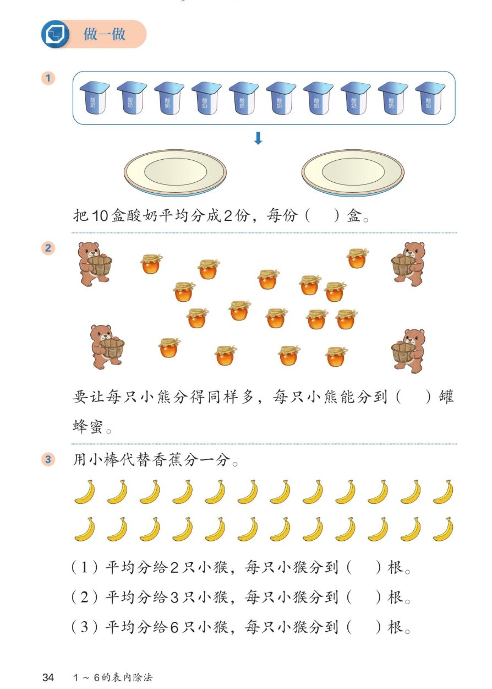

🔊 1~6的表内除法 · 课本第 34 页 · 做一做（酸奶／蜂蜜／香蕉）
人教版《数学》二年级上册 · 有声图文带读 · 先想后看解析
题数
6
认知
2
强化
3
拓展
1
本页重点
数一数再平均分·每份数与份数
🎧 分两步学：
① 解析教材图片
——纯声音读图，读到哪一块哪一块闪动提示；关键处先倒计时让你思考，再在图片下方给出解析并朗读。
② 分层提问练习
——六道分层题（认知 / 强化 / 拓展），先思考再展开解析、朗读参考答案；这一步不再回到图片。
也可以随时点任意一句话、图上任意一块单独听；点课本文字卡还会展开答案。
教材图片（点块听读，读到哪块哪块闪）

📖 人教版《数学》二年级上册 · 课本第 34 页 做一做 · 图片仅供个人学习，版权归人民教育出版社所有
🤔 想一想（点我可跳过）
课本的文字（点句子：听读 + 看答案）
课本第 1 题
把 10 盒酸奶平均分成 2 份，每份（ ）盒
看答案 ▾
每份
5
盒：10 里面有
2
个 5，想
2×5=10
，正好分完。
课本第 2 题
每只小熊分得同样多，能分到（ ）罐蜂蜜
看答案 ▾
图上有
4
只小熊、
16
罐蜂蜜（先数一数！）。
16 里面有
4
个 4 → 每只小熊分到
4
罐。
🌈 分之前一定先数清总数和份数
课本第 3 题（题图）
用小棒代替香蕉分一分：一共 24 根
看答案 ▾
香蕉排成 2 行、每行 12 根，一共
24
根。
🌈 先数总数，再看分给几只小猴
课本第 3 题（三问）
分给 2 只、3 只、6 只小猴，各分到几根？
看答案 ▾
分给
2
只：每只
12
根（2×12=24）；
分给
3
只：每只
8
根（3×8=24）；
分给
6
只：每只
4
根（6×4=24）。
分层提问练习（先想后看解析）
🥛
认知
10 盒酸奶平均分成 2 份，每份几盒？
看解析
🤔 想一想
解析：
每份
5
盒：10 里面有
2
个 5。
💡 想：2×5=10，正好分完
🐻
认知
图上有几只小熊、几罐蜂蜜？每只分到几罐？
看解析
🤔 想一想
解析：
4 只小熊、16 罐蜂蜜
（先数一数）。
每只分到
4
罐：16 里面有
4
个 4。
🍌
强化
24 根香蕉分给 2 只、3 只小猴，各分到几根？
看解析
🤔 想一想
解析：
分给
2
只 → 每只
12
根（2×12=24）
分给
3
只 → 每只
8
根（3×8=24）
🐒
强化
分给 6 只小猴每只几根？三问里你发现了什么规律？
看解析
🤔 想一想
解析：
分给
6
只 → 每只
4
根（6×4=24）。
规律：分的份数
越多
，每份
越少
，总数都是 24。
💡 份数 × 每份数 = 总数
🧠
强化
分香蕉的三种分法有什么共同点？
看解析
🤔 想一想
解析：
都是
平均分
：每只小猴分得
同样多
。
总数都是
24
；都用乘法想：几 × 几 = 24。
🌈
拓展
24 根香蕉还可以平均分给几只小猴？每只分到几根？
看解析
🤔 想一想
解析：
给
4
只每只 6 根；给
8
只每只 3 根；
给
12
只每只 2 根；给
24
只每只 1 根（也给 1 只、2 只、3 只、6 只）。
🌈 想乘法：几 × 几 = 24，就有一种分法
① 解析教材图片
② 分层提问练习
⏹ 停止
纯声音 + 高亮跟随 · 想好才出解析
← 返回导航